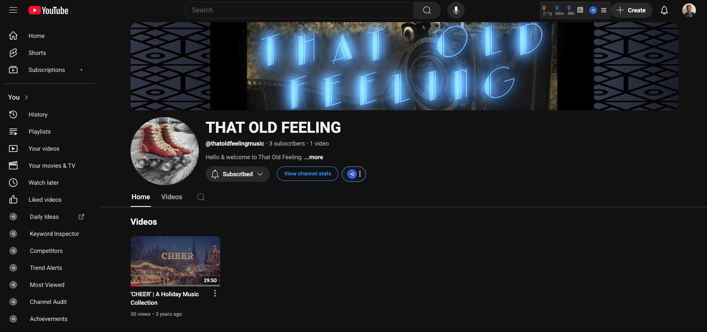
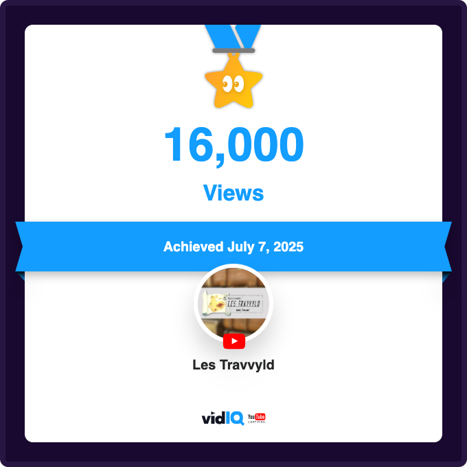

Josh Hunt - Project Case Study
**Project Title:** Content Creation & YouTube Automation Exploration
**Role:** Content Creator/Channel Manager
**Dates:** June 2021 - Present (Ongoing Exploration)
**Project Type:** Personal Development, Digital Content Strategy
1. Project Overview
This project represents an independent exploration into the world of digital content creation, with a specific focus on "YouTube automation" and affiliate marketing as potential side-hustle ventures. The core objective was to understand the mechanics of online video platforms and content monetization, while challenging myself to create and manage channels using exclusively free tools and resources. This initiative led to the launch of two distinct YouTube channels and experimentation with various content creation software.
2. The Challenge/Opportunity
The burgeoning landscape of online content and passive income streams presented an intriguing opportunity for a side-hustle. My challenge was to navigate this space with zero budget for premium tools or outsourced content, relying solely on free software and publicly available resources. This required extensive research, creative problem-solving, and a deep dive into platform-specific best practices, including content sourcing, editing, SEO, and copyright compliance.
3. My Process
My approach involved a multi-faceted learning and execution strategy across two distinct YouTube channels and an additional video project:
1. "That Old Feeling" - Custom Music Mixes
- Niche & Concept: This channel was conceived to offer custom music mixes, aiming to tap into an audience seeking curated audio experiences. The goal was to explore the "YouTube automation" model, even if content creation remained in-house.
- Content Sourcing & Production:
- I diligently researched and sourced video clips from platforms like Archive.org and music from Pixabay.com, specifically selecting content identified as Creative Commons or suitable for Fair Use, to adhere to the "free resources" constraint.
- The video production was executed using DaVinci Resolve, a powerful editing suite I was actively working to increase my proficiency with at the time. This hands-on application significantly deepened my understanding of its features and workflows.
- Challenges & Learnings (Copyright):
- Despite careful sourcing for Creative Commons/Fair Use content, the single video uploaded encountered immediate copyright issues. YouTube notifications indicated that monetization would be restricted in various countries due to different entities holding global rights for the music and footage.
- Key Learning: This experience provided invaluable, albeit challenging, insight into the complex realities of global copyright law and content licensing, particularly when attempting to leverage "free" resources for commercial intent. It underscored the critical importance of meticulous rights management in digital content.
- SEO & Automation Research:
- I researched and optimized video tags using suggestions from the free version of VidIQ, gaining practical experience in basic YouTube SEO.
- Extensive research was conducted into the principles and setup of "YouTube automation," even though I did not outsource the content creation itself. This provided a foundational understanding of scalable content strategies.

Screenshot of "That Old Feeling" YouTube channel homepage.
View "That Old Feeling" Channel
2. "Les Travvyld" - Eclectic Travel Destinations (Shorts Focus)
- Niche & Concept: This channel aimed to showcase eclectic travel destinations, with a strategic focus on YouTube Shorts to leverage the platform's short-form content growth.
- Content Creation & Branding:
- All video shorts were created using Canva, marking my first significant attempt at utilizing this design tool for video production. This pushed my creative boundaries within a user-friendly interface.
- All branding graphics (channel art, thumbnails, etc.) were meticulously designed using GIMP, a free and open-source image manipulation program. This involved sourcing free images from general web searches and music again from Pixabay.
- Results & Analytics:
- Since its launch, "Les Travvyld" gained minor recognition, accumulating over 16,000 total views.
- Despite the view count, the channel only garnered 43 subscribers.
- I continued to use VidIQ to track analytics, but acknowledge that a deeper understanding of these metrics and their actionable insights remains an area for further development.
- Key Learning: This channel provided direct experience with short-form video content strategy, practical application of Canva and GIMP for design, and the nuances of audience engagement and subscriber conversion on YouTube.

Screenshot showing 16,000+ views achieved for "Les Travvyld" channel.
View "Les Travvyld" Channel
3. InVideo.io Project
- Tool Exploration: Beyond the channels, I independently explored InVideo.io, a web-based video creation platform.
- Outcome: This led to the creation of one additional video clip, demonstrating adaptability and a continuous desire to learn new tools in the video production ecosystem.
View InVideo.io Clip
Results & Learnings
This "Content Creator" project, while not achieving significant commercial success, was an incredibly rich learning experience that broadened my skill set and provided invaluable insights into the digital content landscape.
Key learnings from this project include:
- Comprehensive AI/Digital Tool Proficiency: Gained hands-on experience with a diverse array of free and AI-powered tools, including DaVinci Resolve, Canva, GIMP, VidIQ, Runway ML (from previous project context), Eleven Labs, Cassette AI, and InVideo.io. This demonstrates a strong ability to quickly learn and adapt to new software and technologies for content creation.
- Understanding Content Sourcing & Copyright: Acquired critical knowledge about sourcing content legally and the complexities of global copyright, even with "free" or "Creative Commons" labeled assets. This is a vital lesson for any content creator.
- YouTube Platform Mechanics: Developed a practical understanding of YouTube's operational aspects, including video uploading, basic SEO (tags), channel management, and the challenges of monetization and audience growth.
- Short-Form Content Strategy: Gained direct experience in creating and deploying short-form video content, understanding its unique demands and potential for reach.
- Entrepreneurial Iteration: Demonstrated initiative in conceptualizing and launching multiple content ventures, adapting strategies based on real-world feedback (like copyright issues and subscriber growth). This highlights a proactive, experimental approach to business development.
- Analytics & Data Interpretation: While still developing, the consistent use of VidIQ for tracking signifies an awareness of performance metrics, even if full interpretation remains a growth area.
This project underscores my proactive approach to continuous learning, my ability to leverage diverse digital tools, and my resilience in navigating challenges within the dynamic field of online content creation. It showcases a strong foundation for future roles requiring digital media expertise, technical adaptability, and a keen understanding of online platforms.